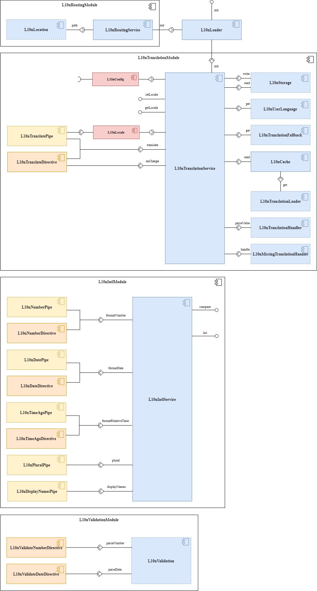

Angular l10n


An Angular library to translate texts, dates and numbers
This library is for localization of Angular apps. It allows, in addition to translation, to format dates and numbers through Internationalization API
Documentation
Architecture

Table of Contents
Installation
npm install angular-l10n --save Usage
You can find a complete sample app here, and a live example on StackBlitz.
Configuration
Create the configuration:
export const l10nConfig: L10nConfig = {
format: 'language-region',
providers: [
{ name: 'app', asset: i18nAsset }
],
cache: true,
keySeparator: '.',
defaultLocale: { language: 'en-US', currency: 'USD' },
schema: [
{ locale: { language: 'en-US', currency: 'USD' }, dir: 'ltr', text: 'United States' },
{ locale: { language: 'it-IT', currency: 'EUR' }, dir: 'ltr', text: 'Italia' }
]
};
export function initL10n(l10nLoader: L10nLoader): () => Promise<void> {
return () => l10nLoader.init();
}
const i18nAsset = {
'en-US': {
greeting: "Hello world!",
whoIAm: "I am {{name}}"
},
'it-IT': {
greeting: "Ciao mondo!",
whoIAm: "Sono {{name}}"
}
};Import the modules and the configuration:
@NgModule({
...
imports: [
...
L10nTranslationModule.forRoot(l10nConfig),
L10nIntlModule
],
providers: [
{
provide: APP_INITIALIZER,
useFactory: initL10n,
deps: [L10nLoader],
multi: true
}
],
bootstrap: [AppComponent]
})
export class AppModule { }Getting the translation
Pure Pipes
<p title="{{ 'greeting' | translate:locale.language }}">{{ 'greeting' | translate:locale.language }}</p>
<p>{{ 'whoIAm' | translate:locale.language:{ name: 'Angular l10n' } }}</p>
<p>{{ today | l10nDate:locale.language:{ dateStyle: 'full', timeStyle: 'short' } }}</p>
<p>{{ value | l10nNumber:locale.language:{ digits: '1.2-2', style: 'currency' } }}</p>Pure pipes need to know when the locale changes. So import L10nLocale injection token in the component:
export class AppComponent {
constructor(@Inject(L10N_LOCALE) public locale: L10nLocale) { }
}OnPush Change Detection Strategy
To support this strategy, there is an async version of each pipe:
<p>{{ 'greeting' | translateAsync }}</p>Directives
<p l10n-title title="greeting" l10nTranslate>greeting</p>
<p [params]="{ name: 'Angular l10n' }" l10nTranslate>whoIAm</p>
<!-- <p [l10nTranslate]="{ name: 'Angular l10n' }">whoIAm</p> -->
<p [options]="{ dateStyle: 'full', timeStyle: 'short' }" l10nDate>{{ today }}</p>
<p [options]="{ digits: '1.2-2', style: 'currency' }" l10nNumber>{{ value }}</p>You can dynamically change parameters and expressions values as with pipes, but not in attributes.
APIs
export class AppComponent implements OnInit {
constructor(private translation: L10nTranslationService, private intl: L10nIntlService) { }
ngOnInit() {
this.translation.onChange().subscribe({
next: () => {
this.greeting = this.translation.translate('greeting');
this.whoIAm = this.translation.translate('whoIAm', { name: 'Angular l10n' });
this.formattedToday = this.intl.formatDate(this.today, { dateStyle: 'full', timeStyle: 'short' });
this.formattedValue = this.intl.formatNumber(this.value, { digits: '1.2-2', style: 'currency' });
}
});
}
}Customize the library
The following features can be customized. You just have to implement the indicated class-interface and pass the token during configuration.
E.g.
@Injectable() export class HttpTranslationLoader implements L10nTranslationLoader {
private headers = new HttpHeaders({ 'Content-Type': 'application/json' });
constructor(@Optional() private http: HttpClient) { }
public get(language: string, provider: L10nProvider): Observable<{ [key: string]: any }> {
const url = `${provider.asset}-${language}.json`;
const options = {
headers: this.headers,
params: new HttpParams().set('v', provider.options.version)
};
return this.http.get(url, options);
}
}
export const l10nConfig: L10nConfig = {
...
providers: [
{ name: 'app', asset: './assets/i18n/app', options: { version: '1.0.0' } },
],
...
};
@NgModule({
...
imports: [
...
L10nTranslationModule.forRoot(
l10nConfig,
{
translationLoader: HttpTranslationLoader
}
)
],
...
})
export class AppModule { }Storage
By default, the library does not store the locale. To store it implement the L10nStorage class-interface, so that the next time the user has the locale he selected.
User Language
By default, the library attempts to set the locale using the user's browser language, before falling back on the default locale. You can change this behavior by implementing the L10nUserLanguage class-interface, for example to get the language via server.
Translation Loader
By default, you can only pass JavaScript objects as translation data provider. To implement a different loader, you can implement the L10nTranslationLoader class-interface, as in the example above.
Translation Fallback
You can enable translation fallback during configuration:
export const l10nConfig: L10nConfig = {
...
fallback: true,
...
};By default, the translation data will be merged in the following order:
'language''language[-script]''language[-script][-region]'
To change it, implement the L10nTranslationFallback class-interface.
Translation Handler
By default, the library only parse the params. L10nTranslationHandler is the class-interface to implement to modify the behavior.
Missing Translation Handler
If a key is not found, the same key is returned. To return a different value, you can implement the L10nMissingTranslationHandler class-interface.
Validation
There are two directives, that you can use with Template driven or Reactive forms: l10nValidateNumber and l10nValidateDate. To use them, you have to implement the L10nValidation class-interface, and import it with the validation module:
@Injectable() export class LocaleValidation implements L10nValidation {
constructor(@Inject(L10N_LOCALE) private locale: L10nLocale) { }
public parseNumber(value: string, options?: L10nNumberFormatOptions, language = this.locale.numberLanguage || this.locale.language): number | null {
...
}
public parseDate(value: string, options?: L10nDateTimeFormatOptions, language = this.locale.dateLanguage || this.locale.language): Date | null {
...
}
}
@NgModule({
...
imports: [
...
L10nValidationModule.forRoot({ validation: LocaleValidation })
],
...
})
export class AppModule { }Routing
You can enable the localized routing importing the routing module after others:
@NgModule({
...
imports: [
...
L10nRoutingModule.forRoot()
],
...
})
export class AppModule { }A prefix containing the language is added to the path of each navigation, creating a semantic URL:
baseHref/[language][-script][-region]/path
https://example.com/en/home
https://example.com/en-US/homeIf the localized link is called, the locale is also set automatically.
To achieve this, the router configuration in your app is not rewritten: the URL is replaced, in order to provide the different localized contents both to the crawlers and to the users that can refer to the localized links.
If you don't want a localized routing for default locale, you can enable it during the configuration:
export const l10nConfig: L10nConfig = {
...
defaultRouting: true
};Lazy loading
If you want to add new providers to a lazy loaded module, you can use L10nResolver in your routing module:
const routes: Routes = [
...
{
path: 'lazy',
loadChildren: () => import('./lazy/lazy.module').then(m => m.LazyModule),
resolve: { l10n: L10nResolver },
data: {
l10nProviders: [{ name: 'lazy', asset: './assets/i18n/lazy', options: { version: '1.0.0' } }]
}
}
];Always import the modules you need:
@NgModule({
declarations: [LazyComponent],
imports: [
...
L10nTranslationModule
]
})
export class LazyModule { }Caching
Enable caching during configuration if you want to prevent reloading of the already loaded translation data:
export const l10nConfig: L10nConfig = {
...
cache: true
};Preloading data
If you need to preload some translation data, for example to use for missing values, L10nTranslationService exposes the translation data in the data attribute. You can merge data by calling the addData method:
export function l10nPreload(translation: L10nTranslationService, translationLoader: L10nTranslationLoader): () => Promise<void> {
return () => new Promise((resolve) => {
translationLoader.get('en-US', { name: 'app', asset: './assets/i18n/app', options: { version: '1.0.0' } })
.subscribe({
next: (data) => translation.addData(data, 'en-US'),
complete: () => resolve()
});
});
}Then add the function to providers, before initL10n:
providers: [
{
provide: APP_INITIALIZER,
useFactory: l10nPreload,
deps: [L10nTranslationService, L10nTranslationLoader],
multi: true
},
...
],Types
Angular l10n types that it is useful to know:
L10nLocale: contains a language, in the formatlanguage[-script][-region][-extension], where:language: ISO 639 two-letter or three-letter code
script: ISO 15924 four-letter script code
region: ISO 3166 two-letter, uppercase code
extension: 'u' (Unicode) extensions
Optionally:
dateLanguage: alternative language to translate dates
numberLanguage: alternative language to translate numbers
currency: ISO 4217 three-letter code
timezone: from the IANA time zone database
L10nFormat: shows the format of the language to be used for translations. The supported formats are:'language' | 'language-script' | 'language-region' | 'language-script-region'. So, for example, you can have a language likeen-US-u-ca-gregory-nu-latnto format dates and numbers, but only use theen-USfor translations setting'language-region'L10nDateTimeFormatOptions: the type of options used to format dates. Extends the IntlDateTimeFormatOptionsinterface, adding the dateStyle and timeStyle attributesL10nNumberFormatOptions: the type of options used to format numbers. Extends the IntlNumberFormatOptionsinterface, adding the digits attribute
Intl API
To format dates and numbers, this library uses the Intl API
Check the current browser support:
All modern browsers have implemented this API. You can use a polyfill like Polyfill.io to extend support to old browsers.
Just add one script tag in your index.html:
<script crossorigin="anonymous"
src="https://polyfill.io/v3/polyfill.min.js?flags=gated&features=Intl.~locale.en-US"></script>When specifying the features, you have to specify what languages to load.
Other polyfills:
- For timezone: Intl.DateTimeFormat timezone
- For timeAgo pipe and directive: Intl.RelativeTimeFormat
The L10nIntlService also provides methods for other APIs, such as Collator, PluralRules and ListFormat.
Previous versions
Angular v8 (Angular l10n v8.1.2)
Angular v7 (Angular l10n v7.2.0)
Angular v6 (Angular l10n v5.2.0)
Angular v5 (Angular l10n v4.2.0)
Angular v4 (Angular l10n v3.5.2)
Angular v2 (Angular l10n v2.0.11)
Contributing
Building the library:
npm install npm run buildTesting:
npm testServing the sample app:
npm start
License
MIT